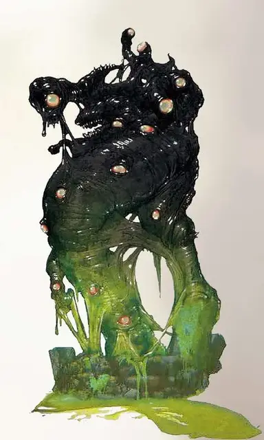

Джуиблекс
Juiblex
Огромное Исчадие (Демон), хаотично-злое, именной НИП

Класс Доспеха 18 (природный доспех)
Хиты 350 (28к12 + 168)
Скорость 30 футов, лазая 30 футов
| мод | спас | ||
|---|---|---|---|
| СИЛ | 24 | +7 | +7 |
| ЛОВ | 10 | +0 | +7 |
| ТЕЛ | 23 | +6 | +13 |
| мод | спас | ||
|---|---|---|---|
| ИНТ | 20 | +5 | +5 |
| МДР | 20 | +5 | +12 |
| ХАР | 16 | +3 | +3 |
Навыки Восприятие +12
Сопротивление урону огонь, холод, электричество
Иммунитет к урону кислота, яд; дробящий, колющий, рубящий от немагических атак
Иммунитет к состояниям окаменение, опутанность, ослепление, отравление, сбивание с ног, захват, паралич, очарование, испуг, ошеломление, истощение, бессознательность
Чувства истинное зрение 120 футов, пассивное Восприятие 22
Языки Все, Телепатия 120 фт.
Опасность 23 (50000 опыта)
Бонус мастерства +7
Особенности
Порча. Любое существо, не являющееся слизью, начинающее ход на расстоянии до 10 футов от Джуиблекса, должно совершить успешный спасбросок Телосложения Сл 21 или будет отравлено до начала следующего хода существа.
Легендарное сопротивление (3/день). Если Джуиблекс проваливает спасбросок, он может вместо этого сделать спасбросок успешным.
Сопротивление магии. Джуиблекс совершает с преимуществом спасброски от заклинаний и прочих магических эффектов.
Регенерация. Джуиблекс восстанавливает 20 хитов в начале своего хода. Если он получает урон от огня или излучения, эта черта не работает в начале его следующего хода. Джуиблекс умирает только в том случае, если начинает свой ход с 0 хитами и не регенерирует.
Паучье лазание. Джуиблекс может лазать по сложным поверхностям, включая потолки, без совершения проверок характеристик.
Культ ДЖУИБЛЕКСа. Безликий Владыка дарует своим прислужникам особые способности. Низшие последователи получают способность «Жидкое перемещение». Самым преданным сторонникам слизней Джуиблекс также дарует способность «Слизистые органы».
Жидкое перемещение. Действием существо может переместиться на 20 футов через отверстия, диаметр которых не превышает 1 дюйма. Оно должно завершить перемещение в пространстве, где сможет вернуться в исходную формую.
В противном случае существо получает 5 урона силовым полем и возвращается в исходное место, откуда начинало своё движение.
Слизистые органы. У существа появляется сопротивление к дробящему, колющему и рубящему урону от немагического оружия.
Всякий раз, когда по существу совершается критическое попадание или, когда его хиты опускаются до 0, все существа в пределах 5 футов получают урон кислотой, равный количеству его Костей Хитов.
Действия
Мультиатака. Джуиблекс совершает три атаки кислотной плетью.
Кислотная плеть. Рукопашная или дальнобойная атака оружием: +14 к попаданию, досягаемость 10 футов или дистанция 60/120, одна цель. Попадание: 21 (4к6 + 7) урона кислотой. Любое существо, убитое этой атакой, затягивается в тело Джуиблекса, и его труп растворяется спустя 1 минуту.
Выброс слизи (перезарядка 5-6). Джуиблекс выплевывает едкую слизь, выбирая целью одно существо, которое он способен видеть на расстоянии до 60 футов от него. Цель должна пройти спасбросок Ловкости Сл 21. В случае провала цель получает 55 (10к10) урона кислотой. За исключением тех случаев, когда цель избегает получения этого урона, любая металлическая броня, которую носила цель, навсегда получает штраф -1 к КД, а любое металлическое оружие, которое носила цель, навсегда получает штраф -1 к броскам урона. Штраф усиливается каждый раз, когда цель становится жертвой этого эффекта. Если штраф к объекту достиг значения -5, этот объект уничтожается. Данный штраф может быть снят с помощью заклинания починка [mending].
Использование заклинаний. Джуиблекс накладывает одно из следующих заклинаний, без затрат материальных компонентов и используя Мудрость в качестве базовой характеристики (Сл спасброска от заклинаний 20):
• Неограниченно: обнаружение магии [detect magic];
• 2/день каждое: заражение [contagion], газообразная форма [gaseous form].
Легендарные действия
Джуиблекс может совершить 3 легендарных действия на выбор из перечисленных ниже вариантов. Лишь одно легендарное действие может быть совершено за один раз, и только в конце хода другого существа. Джуиблекс восстанавливает истраченные действия в начале своего хода.
Атака. Джуиблекс совершает одну атаку Кислотной плетью.
Оскверняющее касание (стоит 2 действий). Рукопашная атака оружием: +14 к попаданию, досягаемость 10 футов, одна цель. Попадание: 21 (4к6 + 7) урона ядом, и цель покрыта слизью. До тех пор, пока слизь не будет счищена с помощью действия, цель будет отравленной, а также любые существа, не являющиеся слизью, будут отравлены, если будут находиться на расстоянии до 10 футов от цели.
Логово
Главное логово Джуиблекса известно под названием Яма Слизи [Slime Pits] – земли, которые Джуиблекс делит с Заггтмой. Этот слой Бездны, также известный как Шедакла [Shedaklah], представляет собой пузырящееся мерзкое болото слизи и зловонных отходов. Его ландшафт покрывает едкая неразумная слизь, странные органические формы всплывают из океанов плесени и гнили по приказу Джуиблекса.
Действия логова
По очереди инициативы 20 (при равной инициативе персонаж совершает действие прежде действия логова), Джуиблекс может совершить действие в логове, чтобы создать один из следующих эффектов; он не может использовать один и тот же эффект два раунда подряд:
• Липкая слизь. Джуиблекс покрывает слизью квадратную область на полу, которую он может видеть, находясь на территории своего логова. Сторона квадрата может достигать величины до 10 футов. Слизь исчезает спустя 1 час или будучи сожженной огнём. Когда слизь появляется, каждое существо, находящееся в её области, должно совершить успешный спасбросок Силы Сл 21 или станет опутанным. Когда существо входит в зону в первый раз за свой ход или заканчивает свой ход в ней, существу необходимо совершить этот же спасбросок.
Опутанное существо прилипает на все время существования зоны слизи или пока не вырвется. Опутанное существо или другое существо, способное до него дотянуться, может потратить действие для того, чтобы освободить себя или другое существо, совершив успешную проверку Силы Сл 21.
Если слизь охватывает огонь, она сгорает спустя 1 раунд. Любое существо, начинающее ход в горящей слизи, получает огненный урон 22 (4к10).
• Скользкая слизь. Джуиблекс покрывает слизью квадратную область на полу, которую он может видеть, находясь на территории своего логова. Сторона квадрата может достигать величины до 10 футов. Слизь исчезает спустя 1 час или будучи сожженной огнём. Когда слизь появляется, каждое существо, находящееся в её области, должно совершить успешный спасбросок Ловкости Сл 21 или упадет ничком и проскользит 10 футов в случайном направлении, определяемом броском к8. Когда существо входит в зону в первый раз за свой ход или заканчивает свой ход в ней, существу необходимо совершить этот же спасбросок.
Если слизь охватывает огонь, она сгорает спустя 1 раунд. Любое существо, начинающее ход в горящей слизи, получает 22 (4к10) урона огнём.
• Зелёная слизь. Зелёная слизь появляется в точке на потолке, выбранной Джуиблексом в его логове. Слизь уничтожается спустя 1 час.
Местные эффекты
Область, в которой расположено логово Джуиблекса, пронизана его магией, создающей в ней один или более из следующих эффектов:
• Кислотная вода. Небольшие источники воды, такие как пруды и колодцы, находящиеся на расстоянии до 1 мили от логова чрезвычайно кислотные и разъедают любой объект, который к ним притрагивается.
• Слизь. Поверхности, расположенные в пределах 6 миль от логова, часто бывают покрытыми тонкой и гладкой пленкой слизи, прилипающей ко всему, к чему притронется.
• Извращённая природа. В пределах 6 миль от логова все проверки Мудрости (Медицина и Выживание) совершаются с помехой.
Если Джуиблекс умирает, эти эффекты прекращаются в течение 1к10 дней.
Описание
В древних гримуарах его называют Безликим Лордом и Слизевым Голодом [Juiblex, the Faceless Lord and Oozing Hunger]. Джуиблекс – лорд демонов, властвующий над слизью, всепожирающее существо, которое не заботят цели и планы других демонов. Он существует лишь для того, чтобы поглощать, переваривая и обращая живую материю в себе подобных. Истинный ужас, Джуиблекс – это пузырящаяся слизевая масса, смесь чёрных и зеленых цветов, с красными глазами, плавающими по его телу. Он может достигать таких размеров, что становится похожим на двадцати футовый холм, выбрасывающий из себя ложноножки, которыми хватает своих жертв и погружает их в свое тело. Те, кто был поглощен Джуиблексом, полностью уничтожаются. Лишь истинные безумцы служат Джуиблексу и тянутся к его слизевым существам. Те, кто жертвуют себя этому лорду демонов, поглощаются им, после чего превращаются в смутно напоминающую гуманоидов живую слизь. Тела этих существ, некогда состоящих из плоти и крови, становятся частью физического тела Джуиблекса, в то время как лорд демонов медленно переваривает и смакует их души.